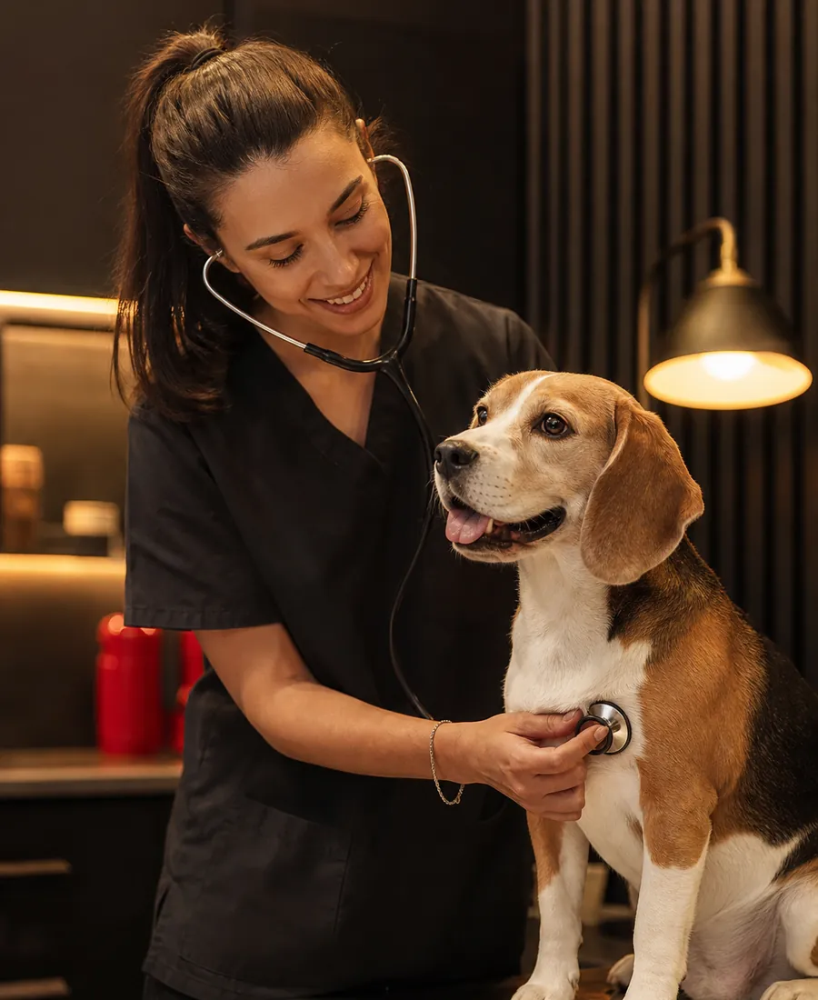
Consulta general
Revisión completa, diagnóstico y un plan claro. Dedicamos el tiempo que haga falta, sin consultas exprés.
Desde 35 € (orientativo)Clínica veterinaria · Perros y gatos · Valencia (ejemplo)
Medicina veterinaria cercana y de verdad: un equipo que conoce a tu mascota por su nombre, urgencias 24 h y un plan de cuidados pensado para cada etapa de su vida, desde el primer día en casa hasta sus años más tranquilos.
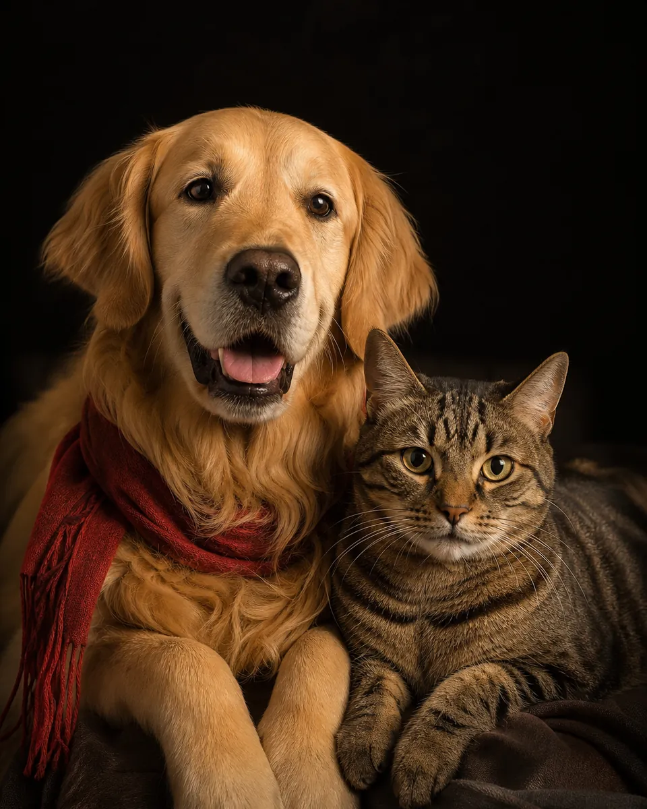
01 Servicios
De la primera vacuna a una cirugía compleja. Sin derivaciones innecesarias, sin prisas y explicándote cada paso.

Revisión completa, diagnóstico y un plan claro. Dedicamos el tiempo que haga falta, sin consultas exprés.
Desde 35 € (orientativo)Calendarios personalizados, desparasitación interna y externa, microchip y pasaporte para viajar.
Desde 35 €Esterilizaciones, tejidos blandos y traumatología con anestesia monitorizada y control del dolor.
Presupuesto cerradoLimpiezas con ultrasonidos, extracciones y revisión de encías. La salud empieza por la boca.
Limpieza desde 150 €Baño, corte y arreglo con productos suaves, en un espacio tranquilo y sin estrés para perros y gatos.
Desde 25 €Un veterinario de guardia todos los días del año. Si es urgente, llama y ven: te estaremos esperando.
Llamar ahoraRadiografía digital, ecografía y laboratorio propio: resultados el mismo día en la mayoría de casos.
Ecografía desde 60 €Acompañamiento especial en las etapas que más lo necesitan: primeras semanas y edad avanzada.
Planes de saludPrecios orientativos de ejemplo. El precio final se confirma en consulta.
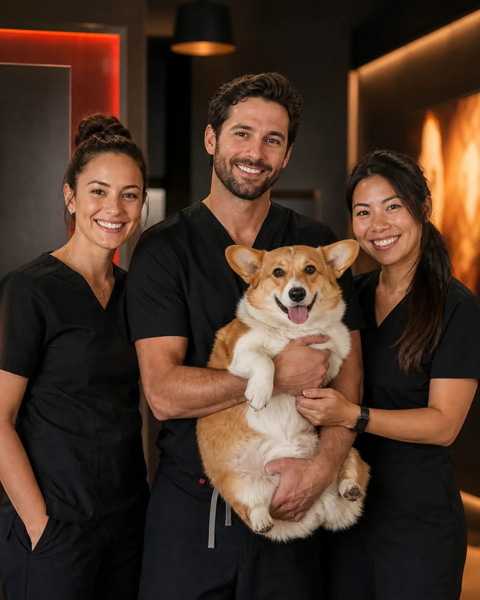
02 Por qué Amigo Fiel
Asignamos un veterinario de referencia a cada mascota, para que no tengas que contar su historia cada vez.
Presupuesto por escrito antes de cualquier prueba o intervención. Nada de sorpresas en la factura.
Sala de espera separada para gatos, feromonas calmantes y manejo amable (Fear Free).
Te llamamos tras una cirugía o tratamiento y te avisamos de cada vacuna y revisión pendiente.
Cifras de ejemplo, se sustituirán por los datos reales de la clínica.
03 Instalaciones
Desliza
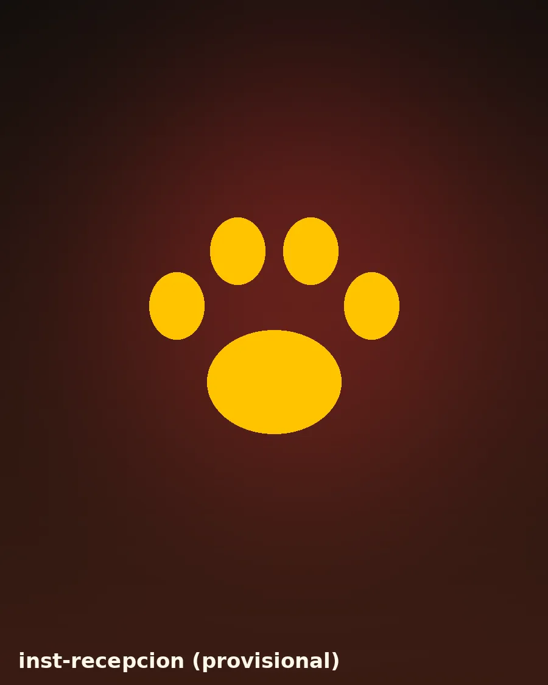
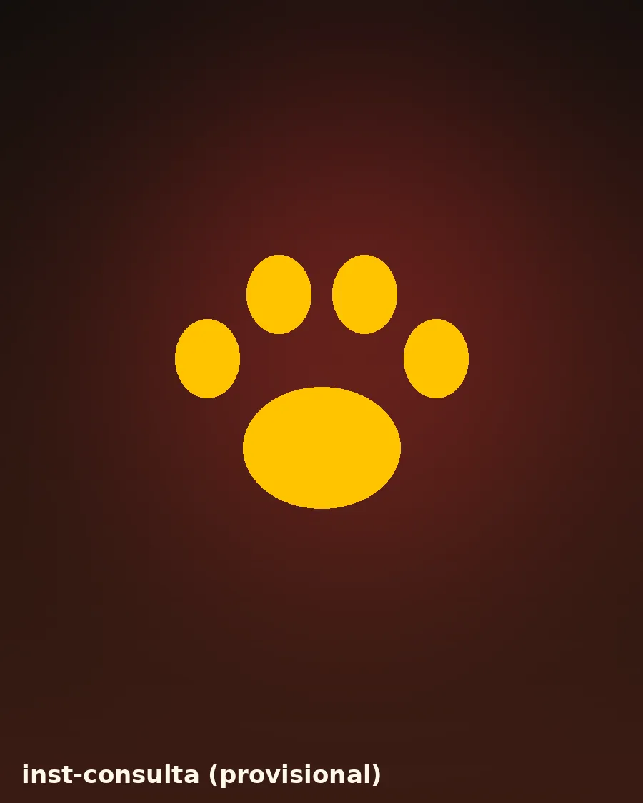
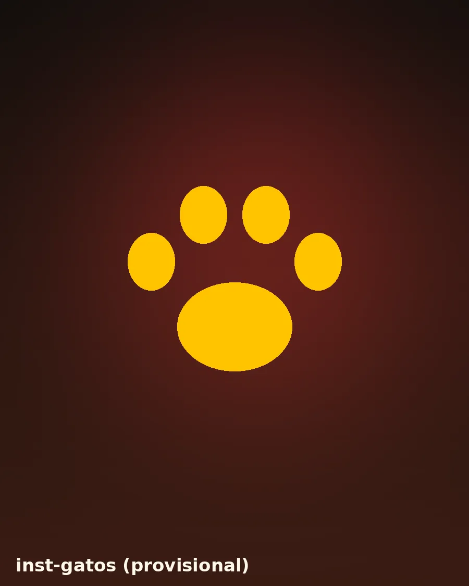
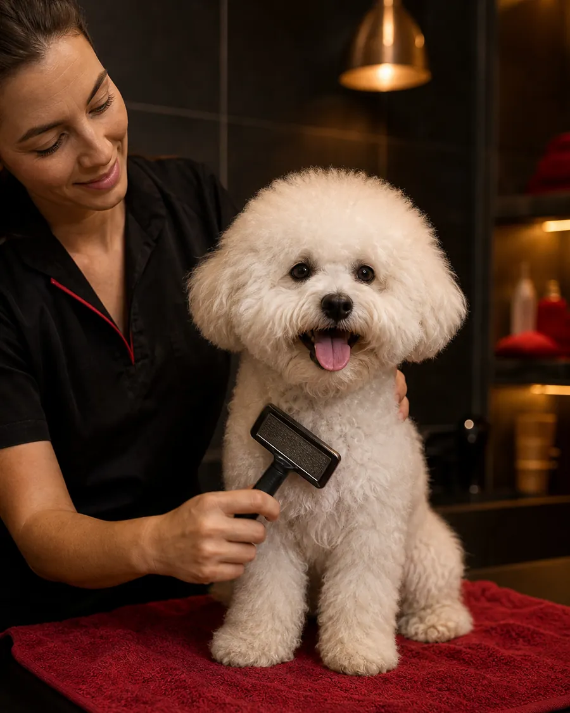
04 Para cada etapa
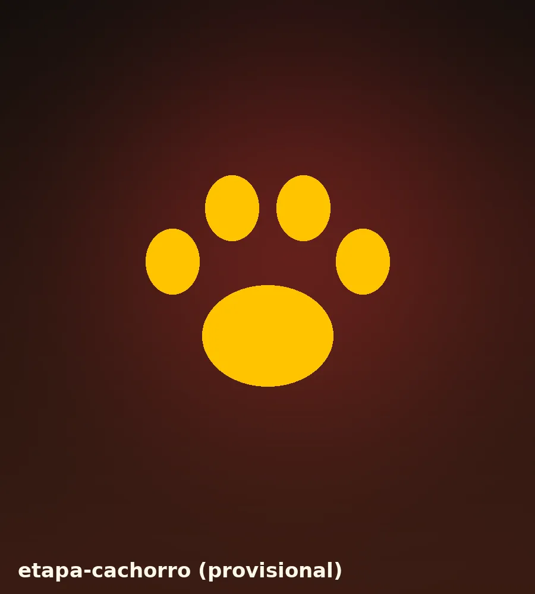
Las primeras semanas marcan su salud para siempre. Te guiamos con la familia nueva: qué comer, cuándo vacunar y cómo socializar.
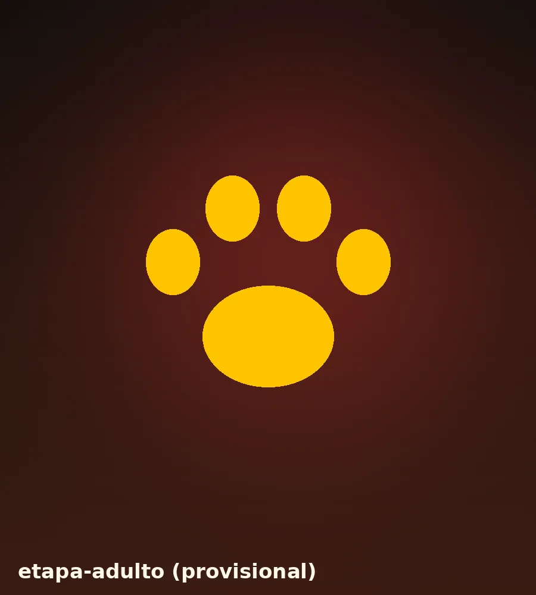
Una revisión anual y una buena rutina de prevención evitan la mayoría de sustos (y de gastos).
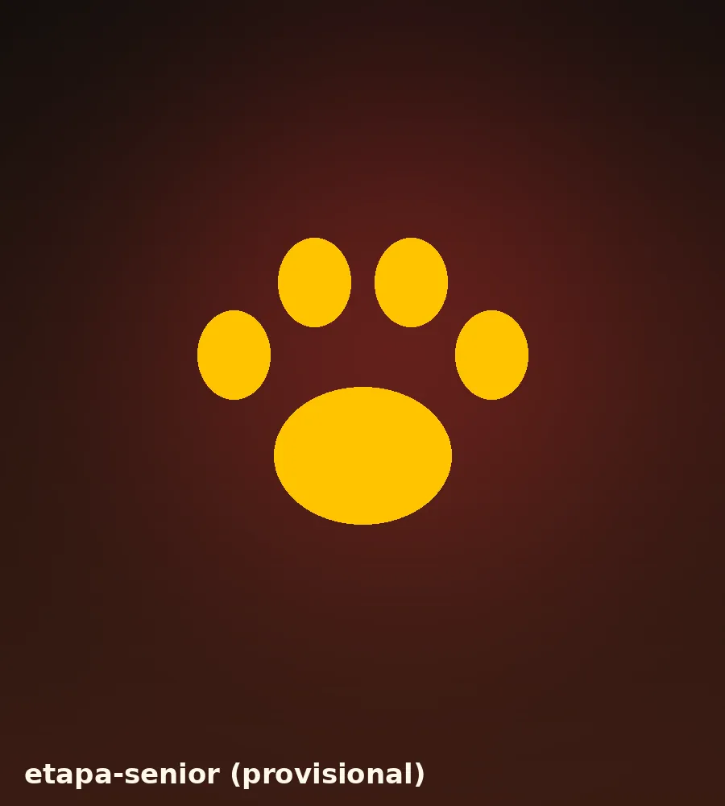
A partir de los 7 años en perros y 10 en gatos, los controles frecuentes detectan a tiempo lo que más importa.
05 Cómo funciona
Por teléfono, con el formulario o preguntando a nuestro asistente. Te confirmamos el hueco en minutos.
Conocemos a tu mascota con calma, revisamos su historial y te explicamos qué necesita y cuánto cuesta.
Recordatorios de vacunas y revisiones, llamada tras tratamientos y tu veterinario siempre localizable.
06 Planificador de cuidados IA
Cuéntanos cómo es tu mascota y, si quieres, sube una foto de su cartilla o un informe previo: nuestra IA lo lee y te prepara su calendario de vacunas, desparasitaciones, revisiones y coste anual estimado.
Estimación orientativa generada automáticamente. No sustituye a una consulta: el veterinario revisará y confirmará el plan en la visita.
07 Familias Amigo Fiel
Testimonios de ejemplo · se sustituirán por reseñas reales
«Adoptamos a Kira con dos meses y no sabíamos nada. Nos explicaron todo con una paciencia enorme y ahora mis hijos se pelean por acompañarla a la revisión.»
«Un domingo a las tres de la mañana Thor se comió algo que no debía. Llamamos, nos esperaban en la puerta y en una hora estaba fuera de peligro.»
«Misi odia salir de casa, pero aquí tienen una sala solo para gatos y la tratan con muchísimo mimo. Por primera vez no volvió estresada.»
«Con el plan de salud anual pago una cuota pequeña y me olvido: me avisan de cada vacuna y las revisiones de Bruno, que ya tiene 11 años, salen mucho mejor de precio.»
«Me dieron el presupuesto de la limpieza dental por escrito antes de empezar y fue exactamente eso. Se agradece muchísimo la transparencia.»
08 Preguntas frecuentes
¿No encuentras tu duda? Pregúntale a nuestro asistente o llámanos.
Sí. Tenemos un veterinario de guardia las 24 horas, los 365 días del año. Si es una urgencia, llama al 600 000 000 (ejemplo) mientras vienes de camino para que te estemos esperando.
Normalmente la primera vacuna se pone hacia las 6-8 semanas y se refuerza cada 3-4 semanas hasta los 4 meses aproximadamente; después, un refuerzo anual. La rabia se pone a partir de las 12 semanas. En la primera visita te damos un calendario personalizado.
Como norma general, desparasitación interna cada 3 meses en adultos y protección externa (pulgas, garrapatas y mosquitos) de forma continua. Depende mucho de su estilo de vida: si sale al campo o convive con niños, puede convenir hacerlo más a menudo.
La consulta general cuesta desde 35 € (precio orientativo de ejemplo). Antes de cualquier prueba o tratamiento te damos un presupuesto por escrito. Con un plan de salud anual, las consultas están incluidas.
Consultas ilimitadas, vacunas anuales, desparasitación interna, analítica de control (dos al año en seniors) y descuentos en cirugía, dental y peluquería, por una cuota mensual. Usa nuestro planificador para ver cuánto ahorrarías en tu caso.
Depende de la especie, el tamaño y la raza. En gatos suele hacerse hacia los 5-6 meses; en perros grandes a veces conviene esperar a que terminen de crecer. Lo valoramos juntos en consulta.
Sí, hay parking gratuito para clientes junto a la clínica y paradas de autobús y metro a menos de 5 minutos andando (datos de ejemplo).
09 Contacto
Dirección, teléfono y horarios de ejemplo
Calle de la Amistad, 12 · 46001 Valencia
| Lunes a viernes | 9:30 – 20:30 |
|---|---|
| Sábados | 10:00 – 14:00 |
| Domingos y festivos | Solo urgencias |
| Urgencias | 24 h · 365 días |
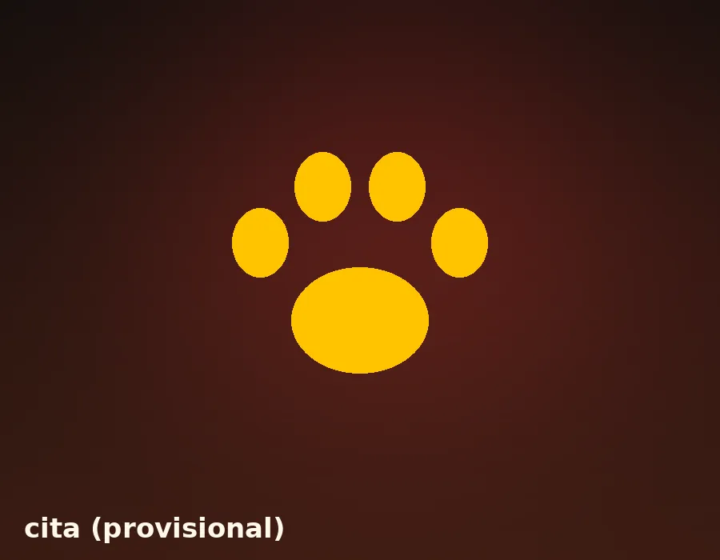
¡Hola! Soy Fiel, el asistente de la clínica Amigo Fiel 🐾 Te ayudo con dudas sobre vacunas, desparasitación, alimentación, comportamiento, precios orientativos… y a pedir cita.
Te oriento, pero no sustituyo a una consulta veterinaria.
Orientación general. No sustituye a la consulta con un veterinario.